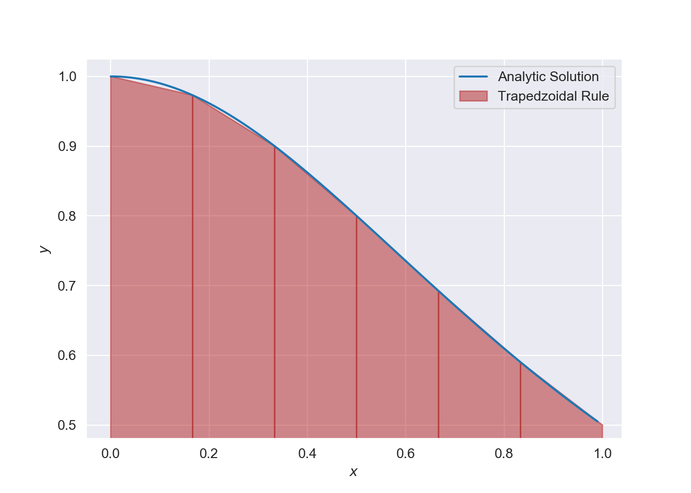
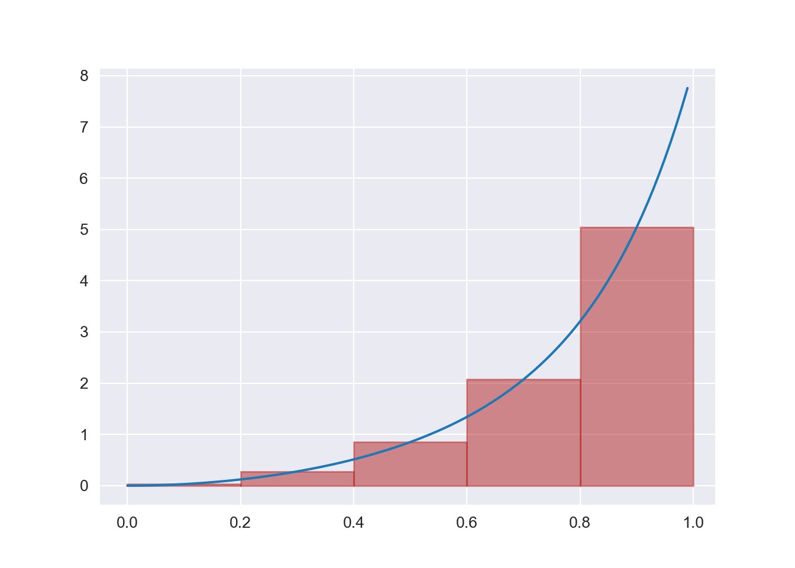

Chapter 2 Numerical Integration
A common problem is to evaluate the definite integral: \[\begin{equation} I = \int_a^b f(x)dx.\tag{2.1} \end{equation}\] Here we wish to compute the area under a the curve \(f(x)\) over an interval \([a, b]\) on the real line. The numerical approximation of definite integrals is known as numerical quadrature. We will consider the interval of integration to be finite and assume the integrand \(f\) is smooth and continuous.
Since integration is an infinite summation we will need to approximate this infinite sum by a finite sum. This finite sum involves sampling the integrand a some number of finite points within the interval, this is known as the quadrature rule. Thus, our goal is to determine which sample points to take and how to weight these in contribution to the quadrature formula. We can design these to a desired accuracy at which we are satisfied with the computational cost required. Generally, this computational cost is measured through the number of integrand function requirements undertaken. Importantly, Numerical Integration is insensitive to round-off error.
2.1 Quadrature Rules
An \(n\)-point quadrature formula has the form: \[\begin{equation} I = \int_a^b f(x)dx = \sum_{i=1}^n w_if(x_i) + R_n.\tag{2.2} \end{equation}\] The points \(x_i\) are the values at which \(f\) is evaluated (called nodes), the multipliers \(w_i\) (called weights) and the remainder \(R_n\). To approximate the value of the integral we compute: \[\begin{equation} I =\sum_{i=1}^n w_if(x_i),\tag{2.3} \end{equation}\] giving the quadrature rule.
Methods of numerical integration are divided into two groups; (i) Newton-Cotes formulas and (ii) Gaussian Quadrature. Newton-Cotes formulas deal with evenly spaced nodes. They are generally used when \(f(x)\) can be computed cheaply. With Gaussian Quadrature nodes are chosen to deliver the best possible accuracy. It requires less evaluations of the integrand and is often used when \(f(x)\) is expensive to compute. It is also used when dealing with integrals containing singularities or infinite limits. In this course we will only be working with Newton-Cotes.
2.2 Newton-Cotes Quadrature
If the nodes \(x_i\) are equally spaced on the interval \([a, b]\), then the resultant quadrature rule is known as a Newton-Cotes Quadrature rule. A closed Newton-Cotes rule includes the endpoints \(a\) and \(b\), if not, the rule is closed.
Consider the definite integral: \[\begin{equation} I = \int_a^b f(x)dx.\tag{2.4} \end{equation}\] Dividing the interval of integration \((a, b)\) into \(n\) equal intervals, each of length \(h = (b-a)/n\), then we obtain our nodes \(x_0, x_1, \ldots, x_n\). We then approximate \(f(x)\) with an interpolant of degree \(n\) which intersects all the nodes. Thus: \[\begin{equation} I = \int_a^b f(x)dx \approx \int_a^b P_n(x)dx.\tag{2.5} \end{equation}\]
2.2.1 Trapezoidal Rule
This is the first and simplest of Newton–Cotes closed integration formulae. It corresponds to the case when the polynomial is of first degree. We partition the interval \([a,b]\) of integration into \(n\) subintervals of equal width, and with \(n+1\) points \(x_0,\;x_1,\;\cdots,\;x_n\), where \(x_0=a\) and \(x_n=b\). Let \[x_{i+1}-x_i=h=\dfrac{b-a}{n},\quad i=0,1,2,\cdots,n-1.\] On each subinterval \([x_i,x_{i+1}]\), we approximate \(f(x)\) with a first degree polynomial, \[\begin{eqnarray*} P_1(x) &=& f_i+{f_{i+1}-f_i \over x_{i+1}-x_i}(x-x_i)\\ &=& f_i+{f_{i+1}-f_i \over h}(x-x_i). \end{eqnarray*}\] Then we have: \[\begin{eqnarray*} \int_{x_i}^{x_{i+1}} f(x)dx &\approx& \int_{x_i}^{x_{i+1}} P_1(x)dx\\ &=& \int_{x_i}^{x_{i+1}} f_i+{f_{i+1}-f_i \over h}(x-x_i) dx\\ &=& h f_i+{f_{i+1}-f_i\ over h}{h^2\over 2}\\ &=& {h \over 2}\left(f_i+f_{i+1}\right) \end{eqnarray*}\] Geometrically, the trapezoidal rule is equivalent to approximating the area of the trapezoid under the straight line connecting \(f(x_i)\) and \(f(x_{i+1})\). Summing over all subintervals and simplifying gives: \[\begin{equation} I = \int_a^b f(x)dx = \sum_{i=1}^n\int_{x_{i-1}}^{x_i}f(x)dx \approx \sum_i^n \dfrac{f(x_{i-1}) + f(x_i)}{2}h, \end{equation}\] or: \[\begin{equation} I\approx {h\over 2}\left[f_0+2(f_1+f_2+\cdots+f_{n-1})+f_n\right],\tag{2.6} \end{equation}\] which is known as the Composite Trapezoidal rule. In practice we would always used composite trapezoidal rule since it is simply trapezoidal rule applied in a piecewise fashion. The error of the composite trapezoidal rule is the difference between the value of the integral and the computed numerical result: \[\begin{equation} E = \int_a^b f(x)dx - I,\tag{2.7} \end{equation}\] So: where \(\epsilon\) is a point which exists between \(a\) and \(b\). We can also see that the error is of order \(\mathcal{O}(h^2)\). Therefore, if the integrand is concave then the error is negative and the trapezoidal rule overestimates the true value. Should the integrand be concave then the error is positive and we have underestimated the true value.
2.2.2 Example
Using the trapezoidal rule, evaluate: \[ \int_0^1 \dfrac{1}{1 + x^2}dx = \dfrac{\pi}{4}, \] use \(n = 6\), i.e. we need 7 nodes.
Solution:
Since \(n = 6\) then \(h = (1 - 0)/6 = 1/6\), therefore: \[ I \approx \dfrac{1}{12}\left[f_0 + 2(f_1 + f_2 + f_3 +f_4 + f_5) + f_6\right] \]
import numpy as np
from math import *
import warnings
warnings.filterwarnings("ignore")
trap = lambda f, x, h: (h/2)*(f(x[0]) + sum(2*f(x[1:-1])) +f(x[-1]))
f = lambda x: (1 + x**2)**(-1)
print('Computed Inputs:')## Computed Inputs:x = np.linspace(0, 1, 7)
h = 1/6
ans = trap(f, x, h)
print('The trapezoidal method yields: {:.6f}'.format(ans))## The trapezoidal method yields: 0.784241## The true answer: 0.785398

2.2.2.1 Exercise
Use the trapezoidal rule on the following integral: \[ \int_0^1 \cos(x)dx, \] by splitting the interval into \(2^k\) subintervals, for \(k = 1, 2,\ldots, 10\). Report the approximation juxtaposed to the corresponding approximation.
2.2.3 The Midpoint Method
Instead of approximating the area under the curve by trapezoids, we can also use rectangles. This may seem less accurate using horizontal lines versus skew ones, however, it is often more accurate.
In this approach, we construct a rectangle for every subinterval where the height equals \(f\) at the midpoint of the subinterval.

Let us now derive the general formula for the midpoint method given \(n\) rectangles of equal width:
\[\begin{align} \int_a^b f(x)\,dx &= \int_{x_0}^{x_1} f(x)dx + \int_{x_1}^{x_2} f(x)dx + \ldots + \int_{x_{n-1}}^{x_n} f(x)dx, \nonumber \\ &\approx h f\left(\frac{x_0 + x_1}{2}\right) + h f\left(\frac{x_1 + x_2}{2}\right) + \ldots + h f\left(\frac{x_{n-1} + x_n}{2}\right) , \\ &\approx h \left(f\left(\frac{x_0 + x_1}{2}\right) + f\left(\frac{x_1 + x_2}{2}\right) + \ldots + f\left(\frac{x_{n-1} + x_n}{2}\right)\right) \end{align}\] This can be rewritten as: \[\begin{equation} \int_a^b f(x) dx \approx h \sum_{i=0}^{n-1}f(x_i),\tag{2.9} \end{equation}\] where \(x_i = (a + h/2) + ih\).
2.2.3.1 Comparing Trapezoidal Vs Midpoint Method
Consider the function \(g(y) = e^{-y^2}\) on the domain \([0, 2]\), i.e. we wish to compute: \[ \int_0^2 e^{-y^2} dy. \] To compare to the two methods, we will increase the number of panels used in each method, from \(n = 2\) to \(n = 1048576\).
## n midpoint trapezoidalfor i in range(1, 21):
n = 2**i
m = midpoint_method(g, a, b, n)
t = trapezoidal(g, a, b, n)
print('{:7d} {:.16f} {:.16f}'.format(n, m, t))
## 2 0.8842000076332692 0.8770372606158094
## 4 0.8827889485397279 0.8806186341245393
## 8 0.8822686991994210 0.8817037913321336
## 16 0.8821288703366458 0.8819862452657772
## 32 0.8820933014203766 0.8820575578012112
## 64 0.8820843709743319 0.8820754296107942
## 128 0.8820821359746071 0.8820799002925637
## 256 0.8820815770754198 0.8820810181335849
## 512 0.8820814373412922 0.8820812976045025
## 1024 0.8820814024071774 0.8820813674728968
## 2048 0.8820813936736116 0.8820813849400392
## 4096 0.8820813914902204 0.8820813893068272
## 8192 0.8820813909443684 0.8820813903985197
## 16384 0.8820813908079066 0.8820813906714446
## 32768 0.8820813907737911 0.8820813907396778
## 65536 0.8820813907652575 0.8820813907567422
## 131072 0.8820813907631487 0.8820813907610036
## 262144 0.8820813907625702 0.8820813907620528
## 524288 0.8820813907624605 0.8820813907623183
## 1048576 0.8820813907624268 0.8820813907623890## True Solution to 16 decimals is: 0.882081390762422A visual inspection of the numbers shows how fast the digits stabilise in both methods. It appears that 13 digits have stabilised in the last two rows.
2.2.4 Simpson’s Rule
The trapezoidal rule approximates the area under a curve by summing over the areas of trapezoids formed by connecting successive points by straight lines. A more accurate estimate of the area can be achieved by using polynomials of higher degree to connect the points. Simpson’s rule uses a second degree polynomial (parabola) to connect adjacent points. Interpolating polynomials are convenient for this approximation. So the interval \([a,b]\) is subdivided into an even number of equal subintervals (\(n\) is even). Next we pass a parabolic interpolant through through three adjacent nodes. Therefore our approximation is: \[\begin{equation} I = \dfrac{h}{3}\left[ f_{i-1} + 4f_i + f_{i+1}\right].\tag{2.10} \end{equation}\] Summing the definite integrals over each subinterval \([x_{i-1},x_{i+1}]\) for \(i=1,3,5, \cdots, n-1\) provides the approximation: \[\begin{equation} \int_a^b f(x)dx\approx {h\over 3}\left[ (f_0+4 f_1+f_2)+ (f_2+4 f_3+f_4)+ \cdots+(f_{n-2}+4 f_{n-1}+f_{n})\right]\tag{2.11} \end{equation}\] By simplifying this sum we obtain the approximation scheme: \[\begin{eqnarray} \int_a^b f(x)dx &\approx& {h\over 3}\left[ f_0+4 f_1+2f_2+ 4f_3+ \cdots+ 2f_{n-2}+4 f_{n-1}+f_n\right]\nonumber\\ &\approx& {h\over 3}\left[ f_0+4(f_1+f_3+\cdots f_{n-1})+ 2(f_2+f_4+\cdots+f_{n-2}) +f_n \right] \end{eqnarray}\] This method of approximation is known as Composite Simpson’s 1/3 Rule. The error for Simpson’s rule is: \[\begin{equation} E_S = -\dfrac{(b-a)h^4}{180}f^{4}(\epsilon), \ \ \ \ \epsilon \in [a, b],\tag{2.12} \end{equation}\] giving an error of order \(\mathcal{O}(h^4)\). Hence if the integrand is of degree \(n \leq 3\), then the error is zero and we obtain the exact value. The same can be said for the trapezoidal rule the integrand is linear.
2.2.4.1 Exercise
Apply Simpson’s 1/3 rule on the following integral: \[ \int_0^1 \cos(x)dx, \] by splitting the interval into \(2^k\) subintervals, for \(k = 1, 2,\ldots, 10\). Report the approximation juxtaposed to the corresponding approximation.
What can you note about the errors obtained here compared to when the above integral was solved using trapezoidal rule?
2.2.5 Convergence Rates
Often when implementation numerical approximations we may assume certain asymptotic behaviours when considering errors. For example, when implementing experimental results of the problem \(\int_0^1 3t^2e^{t^3}dt\), where \(n\) is doubled in each run \(n = 4, 8, 16\) using the trapezoidal rule, the errors where 12%, 3% and 0.77% respectively. This illustrates that the error was approximately reduced by a factor of 4 when \(n\) was doubled. Therefore, the error converges to zero as \(n^{-2}\) and we can say that the convergence rate is 2 (quadratic). Numerical integration methods usually have an error that converge to zero as \(n^{−p}\) for some \(p\) that depends on the method. This implies that it does not matter what the actual approximation error is since we know at what rate it is reducing by. Therefore, running a method for two or more different \(n\) values would allows us to see if the expected rate is indeed achieved.
The idea of a corresponding unit test is then to run the algorithm for some \(n\) values, compute the error (the absolute value of the difference between the exact analytical result and the one produced by the numerical method), and check that the error has approximately correct asymptotic behaviour, i.e., that the error is proportional to \(n^{−2}\) in case of the trapezoidal and midpoint method.
More formally, assume that the error \(E\) depends on \(n\) according to: \[ E = Cn^r, \] where \(C\) is an unknown constant and \(r\) is the convergence rate. Consider a set of experiments with various \(n\), i.e. \(n_0, n_1, \ldots, n_q\). We can compute the errors at each \(n\), i.e. \(E_0, E_1, \ldots, E_q\). Therefore, for two consecutive experiments, \(i\) and \(i - 1\), we have the error model: \[\begin{align} E_{i} &= Cn_{i}^r, \\ E_{i-1} &= Cn_{i-1}^r\thinspace. \end{align}\] These are two equations for two unknowns \(C\) and \(r\). Eliminating \(C\) by dividing the equations by each other. Then solving for \(r\) gives: \[\begin{equation} r_{i-1} = \frac{\ln (E_i/E_{i-1})}{\ln (n_i/n_{i-1})}. \end{equation}\] We have a subscript \(i - 1\) in \(r\) since the estimated value for \(r\) varies with \(i\). Ideally, \(r_{i-1}\) approaches the correct convergence rate as the number of intervals.
2.2.6 Exercises
- Since every point of measurement in the trapezoidal rule is used in two different subintervals, we must evaluate the function we want to integrate at every point twice. Is this a true statement to make?
- Apply the trapezoidal rule to approximate the integral: \[ \int_0^1 x^2dx, \] using only 2 intervals. What is the result?
- Compute an approximation for the integral: \[ \int_0^{\pi/2}\dfrac{\sin(x)}{1 + x^2}dx, \] with the trapezoidal rule and 6 subintervals.
- Using the trapezoidal rule, along with 10 subintervals on the integral: \[ \int_0^1 e^xdx, \] determine a value of \(h\) which guarantees that the absolute error is smaller than \(10^{-10}\).
- When using the trapezoidal rule and \(h\) is halved, some function values used with stepsize \(h/2\) are the same as those used when the stepsize was \(h\). Derive a formula for the trapezoidal rule with step length \(h/2\) that allows one not to recompute the function values that were computed when the stepsize was \(h\).
- Is the Simpson’s Rule exact for polynomials of degree 3 or lower?
- Compute an approximation for the integral: \[ \int_0^{\pi/2}\dfrac{\sin(x)}{1 + x^2}dx, \] with the Simpson’s rule and 6 subintervals.
- How many function evaluations does one need to calculate the integral: \[ \int_0^1 \dfrac{dx}{1 + 2x}, \] with the trapezoidal rule to ensure that the error is smaller than \(10^{-10}\).
- Repeat question 8 using the Simpson’s rule.
2.3 Romberg Integration
This method of integration uses the trapezoidal rule to obtain the initial approximation to the integral followed by Richardson’s approximation to obtain improvements.
We can show that for a trapezoidal approximation: \[ I=\int_a^b f(x) dx=T(h)+ R(h), \quad R(h) = a_1 h^2+a_2 h^4+a_3 h^6+ \cdots=\mathcal{O}(h^2),\] where, \[ T(h)={h\over 2}(f_0+2 f_1+2 f_2+\cdots +2 f_{n-1}+f_{n}),\ \ \ \ h={(b-a)\over n}.\] Consider two trapezoidal approximations with spacing \(2h\) and \(h\) and \(n\) is even.
\[\begin{align} I_2 &= T(2h)+ a_1 (2h)^2+ a_2 (2h)^4+ a_3 (2h)^6+\cdots\tag{2.13}\\ I_1 &= T(h)+a_1 h^2+a_2 h^4+a_3 h^6+\cdots \tag{2.14} \end{align}\]
If we subtract equation (2.13) from 4 times equation (2.14) we eliminate the leading error term (i.e. of \(\mathcal{O}(h^2)\)) and we get \[I ={1\over 3}(4 T(h)- T(2h))+4 a_2 h^4+ 20 a_3 h^6+\cdots\] after dividing right through by 3. But:
\[\begin{eqnarray*} {1\over 3}(4 T(h)- T(2h)) &=& {h\over 3}[(2 f_0+4 f_1 +4 f_2+\cdots 4f_{n-1}+2 f_n) - (f_0+2 f_2+2 f_4+\cdots 2 f_{n-2}+ f_n) \\ &=& {h\over 3}(f_0+4 f_1 +2 f_2+4f_3+\cdots 2f_{n-2}+4 f_{n-1}+f_n)\\ &=& S(h), \end{eqnarray*}\]
which is the Simpson’s rule, \(S(h),\) for \(h,\) with an error \(\mathcal{O}(h^4)\).
If we repeat for \(h/2\), assuming that \(n\) is a multiple of 4, we have: \[\begin{align} I_{h} &=& S(h)+ c_1 h^4+ c_2 h^6+\cdots \tag{2.15}\\ I_{h/2} &= & S(h/2)+c_1 \left({h\over 2}\right)^4+c_2 \left({h\over 2}\right)^6+\cdots\tag{2.16} \end{align}\] Multiply (2.16) by 16 and subtract (2.15) to get \[I ={16 S(h/2)- S(h)\over 15}+d_1 h^6+\cdots\] which is now more accurate, with an error \(\mathcal{O}(h^6)\).
We now generalise the results for \(h_k=(b-a)/2^k\), \(n=2^k\). Hence the trapezoidal rule for \(2^k\) subintervals (i.e. \(n\) is even) becomes \[ T_{1,k}={h_k\over 2}(f_0+2 f_1+2 f_2+\cdots +2 f_{2^k-1}+f_{2^k})\] \[ I=T_{1,k}+a_1 h_k^2+a_2 h_k^4+a_3 h_k^6+\cdots\] We define \[T_{2,k} ={1\over 3}\ (4 T_{1,k+1}- T_{1,k}),\quad k=1,2,\cdots\] which is the Simpson’s rule for \(h_k\) and hence has an error \(\mathcal{O}(h_k^4)\), i.e., \[ I=T_{1,k}+c_1 h_k^4+c_2 h_k^6+\cdots\]
In general, we define \[\begin{equation} T_{j}^{i} ={1\over 4^j-1}(4^j T_{j-1}^{i}- T_{j-1}^{i-1}),\quad j=1,\cdots, m\quad i=1,2,\cdots n \tag{2.17} \end{equation}\]
We can represent the approximations in the triangular form:
| \(h_i\) | \(T_0^i\) | \(T_1^i\) | \(T_2^i\) | \(\ldots\) | \(T_m^i\) |
|---|---|---|---|---|---|
| \(h_1\) | \(T_0^1\) | ||||
| \(h_2\) | \(T_0^2\) | \(T_1^1\) | |||
| \(h_3\) | \(T_0^3\) | \(T_1^2\) | \(T_2^1\) | ||
| \(\vdots\) | \(\vdots\) | \(\vdots\) | \(\ddots\) | ||
| \(h_m\) | \(T_0^{m}\) | \(T_1^{m-1}\) | \(\ldots\) | \(T_m^{1}\) |
2.3.0.1 Example
Use Romberg integration to find the integral of \(f(x)=e^{-x}\) for \(x\in [0,1]\). Take the initial sub-interval as \(h=(1-0)/2=0.5\). Use 6 decimal places.
| \(h_i\) | \(T_{0}^k\) | \(T_{1}^k\) | \(T_{2}^k\) |
|---|---|---|---|
| 0.5 | 0.645235 | ||
| 0.25 | 0.635409 | 0.632134 | |
| 0.125 | 0.632943 | 0.632121 | 0.632121 |
Hence \(T_{2}^1=0.632121\) with an error of \(\mathcal{O}(h^6)\).
2.3.1 Exercises
- Use (a) the trapezoidal rule (b) Simpson’s rule to estimate \(I\) for the following:
- \(\displaystyle\quad f(x)={1\over 1+x^2}\), over the interval \([0,1]\) for \(n=4\)
- \(\displaystyle \quad f(x)=x e^{-x^2}\) over the interval \([0,2]\) for \(n=4\) Compare your numerical results with the analytical ones.
- Use Romberg’s method to approximate to integral \[ I= \int_0^1 \sqrt{1-x^2} dx\] Use \(h_1=0.2\), \(h_2=0.1\) and \(h_3=0.05\).
- Estimate \(\int_0^\pi f(x)dx\) as accurately as possible, where \(f(x)\) is defined by the data:
| \(x\) values | 0 | \(\pi/4\) | \(\pi/2\) | \(3\pi/4\) | \(\pi\) |
|---|---|---|---|---|---|
| \(f(x)\) | 1.0000 | 0.3431 | 0.2500 | 0.3431 | 1.0000 |
- The period of a simple pendulum of length \(L\) is \(\tau = 4\sqrt{\dfrac{L}{g}h(\theta_0)}\), where \(g\) is the gravitational acceleration, \(\theta_0\) represents the angular amplitude and: \[ h(\theta_0) = \int_0^{\pi /2} \dfrac{d\theta}{\sqrt{1 - \sin^2(\theta_0/2)\sin^2\theta}}. \] Compute \(h(15^\circ), h(30^\circ)\) and \(h(45^\circ)\).
2.4 Double and Triple Integrals
2.4.1 The Midpoint Method for Double Integrals
Given a double integral over the rectangular domain \([a, b] \times [c, d]\): \[ \int_a^b \int_c^d f(x, y)dydx. \] Can we approximate this integral numerically?
This can be done by considering the double integral as two integrals, each in one variable and then approximate each one numerically with our earlier formulae. Therefore: \[ \int_a^b \int_c^d f(x, y)dydx = \int_a^b g(x)dx, \ \ \ \ g(x) = \int_c^d f(x, y)dy. \] We can now use the midpoint method and begin with \(g(x) = \int_c^d f(x, y)dy\). For the interval \([c, d]\) we have \(n_y\) and length \(h_y\). Thus the integral becomes: \[ g(x) = \int_c^d f(x, y)dy \approx h_y \sum_{j=0}^{n_y - 1} f(x, y_j), \ \ \ \ y_j = c+ \frac{1}{2}h_y + jh_y. \] This looks slightly different than before, since we need to integrate in both \(x\) and \(y\) directions. Note when integrating in the \(y\) direction we use \(n_y\) for \(n\), \(h_y\) for \(h\) and index according to \(j\). When integrating in the \(x\) direction, we use \(h_x, n_x\) and \(i\) respectively.
So, the double integral approximated by the midpoint method: \[ \int_a^b g(x)dx \approx h_x \sum_{i=0}^{n_x-1} g(x_i),\quad x_i=a + \frac{1}{2}{h_x} + ih_x. \] So finally putting both approximations together we get the composite midpoint method for the double integral: \[\begin{align} \int_a^b \int_c^d f(x,y) dydx &\approx h_x \sum_{i=0}^{n_x-1} h_y \sum_{j=0}^{n_y-1} f(x_i,y_j)\nonumber\\ &= h_xh_y \sum_{i=0}^{n_x-1} \sum_{j=0}^{n_y-1} f(a + \frac{h_x}{2} + ih_x, c + \frac{h_y}{2} + jh_y)\thinspace . \end{align}\]
2.4.1.1 Example
Compute the integral: \[ \int_2^3\int_0^2 (2x + y)dydx. \] (Solution: 12 - check as an exercise)
f = lambda x, y: 2*x + y
a = 2; b = 3; c = 0; d = 2; nx = 5; ny = 5
print('Numerical approximation is:', midpoint_method_double(f, a, b, c, d, nx, ny))
# check symbolic solution## Numerical approximation is: 12.000000000000009import sympy
x, y = sympy.symbols('x y')
true_ans = sympy.integrate(f(x, y), (x, a, b), (y, c, d))
print('True analytical solution:', true_ans)## True analytical solution: 122.4.2 The Midpoint Method for Triple Integrals
The idea used for double integrals can similarly be extended to three dimensions. Consider the triple integral: \[ \int_{a}^{b} \int_c^d \int_e^f g(x,y,z) dzdydx, \] we wish to approximate the integral via the midpoint rule. Utilising the same strategy as before, we split the integral into one-dimensional integrals: \[\begin{align*} p(x,y) &= \int_e^f g(x,y,z) dz\\ q(x) &= \int_c^d p(x,y) dy\\ \int_{a}^{b} \int_c^d \int_e^f g(x,y,z) dzdydx &= \int_a^b q(x)dx \end{align*}\] Next we apply the midpoint rule to each of these one-dimension integrals: \[\begin{align*} p(x,y) = \int_e^f g(x,y,z) dz &\approx \sum_{k=0}^{n_z-1} g(x,y,z_k), \\ q(x) = \int_c^d p(x,y) dy &\approx \sum_{j=0}^{n_y-1} p(x,y_j), \\ \int_{a}^{b} \int_c^d \int_e^f g(x,y,z) dzdydx = \int_a^b q(x)dx &\approx \sum_{i=0}^{n_x-1} q(x_i), \end{align*}\] where: \[ z_k=e + \frac{1}{2}h_z + kh_z,\quad y_j=c + \frac{1}{2}h_y + jh_y \quad x_i=a + \frac{1}{2}h_x + ih_x. \] So finally, starting with the formula for \(\int_{a}^{b} \int_c^d \int_e^f g(x,y,z) dzdydx\) and combining the two previous formulas we have: \[\begin{align} & \int_{a}^{b} \int_c^d \int_e^f g(x,y,z)\, dzdydx\approx\nonumber\\ & h_xh_yh_z \sum_{i=0}^{n_x-1}\sum_{j=0}^{n_y-1}\sum_{k=0}^{n_z-1} g(a + \frac{1}{2}h_x + ih_x, c + \frac{1}{2}h_y + jh_y, e + \frac{1}{2}h_z + kh_z)\thinspace. \end{align}\]
2.4.2.1 Example
Evaluate the following integral: \[ \int_2^3\int_1^2\int_0^1 8xyz\ dzdydx, \] where \(n_x = n_y = n_z = 5\)
f1 = lambda x, y, z: 8*x*y*z
a = 2; b = 3; c = 1; d = 2; e = 0; f = 1; nx = 5; ny = 5; nz = 5
print(midpoint_method_triple(f1, a, b, c, d, e, f, nx, ny, nz))
# Check symbolic solution## 15.000000000000009import sympy
x, y, z = sympy.symbols('x y z')
true_ans = sympy.integrate(f1(x, y, z), (x, a, b), (y, c, d), (z, e, f))
print('True analytical answer:', true_ans)## True analytical answer: 15